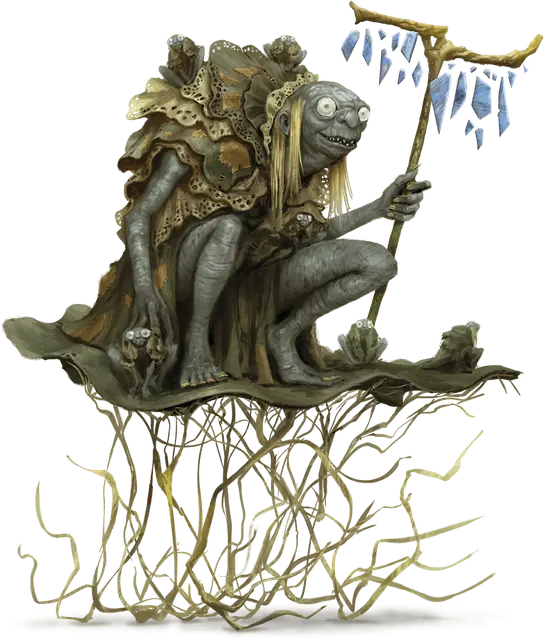

Бавлорна Гнилая солома
Bavlorna Blightstraw
Средняя Фея (Карга), нейтрально-злая, именной НИП

Класс Доспеха 15 (природный доспех)
Хиты 110 (13к8 + 52)
Скорость 30 футов, плавая 30 футов
| мод | спас | ||
|---|---|---|---|
| СИЛ | 22 | +6 | +6 |
| ЛОВ | 11 | +0 | +0 |
| ТЕЛ | 18 | +4 | +7 |
| мод | спас | ||
|---|---|---|---|
| ИНТ | 16 | +3 | +6 |
| МДР | 12 | +1 | +4 |
| ХАР | 15 | +2 | +5 |
Навыки Восприятие +4, Магия +9, Обман +5, Скрытность +3
Чувства истинное зрение 60 футов, пассивное Восприятие 14
Языки Общий, Сильван, Эльфийский
Опасность 7 (2900 опыта)
Бонус мастерства +3
Особенности
Дар бессмертия. Бавлорна невосприимчива к любому воздействию, которое могло бы состарить её и она не может умереть от старости.
Амфибия. Бавлорна может дышать и воздухом и под водой.
Аллергия на противосолонь. Если существо находящееся в пределах 10 футов от Бавлорны использует по крайней мере 10 футов движения, чтобы бежать на месте против часовой стрелки, Бавлорну одолевает приступ чихания, и она не может накладывать заклинания до конца своего следующего хода. Кроме того, любое существо, проглоченное Бавлорной, немедленно изрыгается и падает ничком в свободном пространстве в пределах 5 футов от неё.
Совместное колдовство Шабаша Песочных часов. В редких случаях, когда все три ведьмы Шабаша Песочных часов находятся в пределах 30 футов друг от друга, любая из них может использовать действие, чтобы наложить одно из следующих заклинаний, не требующее материальных компонентов (Сл спасброска от заклинаний 14): обнаружение мыслей [detect thoughts], рассеивание магии [dispel magic], перст смерти [finger of death], находчивость [glibness], поиск существа [locate creature], множественное внушение [mass suggestion].
После того, как заклинание из этого списка было наложено, ни один член шабаша не может наложить это общее заклинание снова до следующего рассвета, когда шабаш восстановит все свои общие заклинания.
Действия
Мультиатака. Бавлорна совершает одну атаку Укусом и одну атаку Иссушающим лучом.
Укус. . Рукопашная атака оружием: +9 к попаданию, досягаемость 5 футов, одна цель. Попадание: 13 (2к6 + 6) колющего урона, и цель становится схваченной (Сл высвобождения 16), если это существо Среднего размера или меньше. Пока захват не закончится, цель опутана, и Бавлорна не может использовать свою атаку Укусом против другой цели.
Иссушающий луч. . Дальнобойная атака заклинанием: +6 к попаданию, дистанция 60 футов, одна цель. Попадание: 17 (4к6 + 3) урона некротической энергией.
Создание лорнлингов (перезарядка 5-6). Бавлорна создает одну или две свои копии высотой 1 фут, называемые лорнлингами (используйте блок статистики квиклинг [quickling]). Каждый лорнлинг появляется в свободном пространстве в пределах 5 футов от Бавлорны, подчиняется ее командам и начинает свой ход сразу после неё. Лорнлинг существует 1 час, пока он или Бавлорна не умрут, или пока Бавлорна не отпустит его действием. Бавлорна одновременно может иметь не более восьми лорнлингов.
Использование заклинаний. Бавлорна накладывает одно из следующих заклинаний, используя Интеллект в качестве базовой характеристики и без использования материальных компонентов (Сл спасброска от заклинаний 14):
• Неограниченно: обнаружение магии [detect magic];
• 2/день каждое: сотворение пищи и воды [create food and water], превращение [polymorph], снятие проклятья [remove curse];
• 1/день: уход в иной мир [plane shift] (только на себя).
Бонусные действия
Проглатывание. Бавлорна проглатывает существо Маленького размера или меньше, которое она держит в захвате, заканчивая на нём захват. Будучи проглоченным, существо ослеплено и опутано, и обладает полным укрытием от атак и прочих эффектов, исходящих снаружи Бавлорны и получает 10 (3к6) урона кислотой в начале каждого хода. Если проглоченное существо является одним из лорнлингов Бавлорны, Бавлорна получает все воспоминания лорнлинга, когда урон кислотой уменьшает его хиты до 0.
Бавлорна может проглотить только одно существо за раз. Если Бавлорна умирает, проглоченное существо перестает быть опутанным ею, и может высвободиться из трупа, потратив 5 футов перемещения, падая при выходе ничком.
Описание
Младше Скабаты и старше Энделин, Бавлорну называют Лорной с Отвисшей челюстью, потому что ее широкий рот часто отвисает. Мухи влетают и вылетают из него. Она карга настоящего, живущая здесь и сейчас, от мгновения к мгновению. Те отчаявшиеся люди, которые обращаются к ней, делают это, чтобы найти средство от досадных проблемы или беспокойства. Хотя она презирает незваных гостей, трагическая история горя и страданий настраивает ее на переговоры. Если эти посетители заключат сделку с Бавлорной, она использует свои силы, чтобы решить их насущную проблему в обмен на что-то полезное для неё.